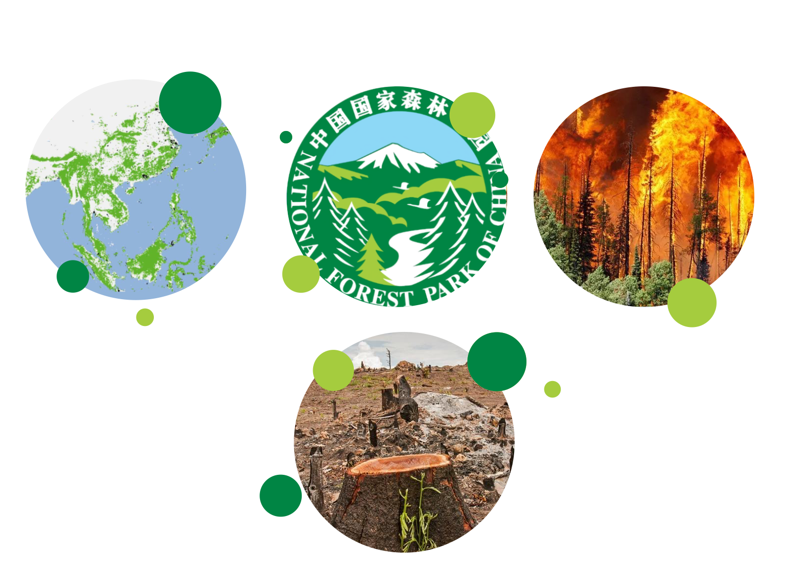

Current Global Forest Crisis
Forests contain about 80% of the world's terrestrial biodiversity. More than 60,000 species of trees grow in forests and woodlands. Over 1 billion people worldwide rely directly on forests for food, shelter, energy, and income. Deforestation continues at an alarming rate—195 million acres of forest are destroyed each year, accounting for 12%–20% of global greenhouse gas emissions, contributing to climate change.
The figures on the United Nations official website serve as a stark reminder of the importance of understanding forests. Behind the numbers are once vast forests, lush greenery, and the vibrant life of nature; and also the aftermath of slash-and-burn practices, the devastation of living beings, followed by large-scale reforestation efforts.
Impact of Forest Destruction
The greatest impact of forest disappearance is that millions of species lose their habitats. These plants and animals, having lost their final habitats, ultimately face extinction. The reduction of forest area also has many effects on climate change. Forest soils are relatively moist, but without tree cover, they dry out quickly. Trees also release water vapor into the air, accelerating the water cycle. Without trees performing these functions, many forests quickly turn into deserts after being cut down. Moreover, trees absorb large amounts of greenhouse gases that cause global warming. Fewer forests mean more greenhouse gases enter the atmosphere, accelerating the pace and severity of global warming.

Forests in Our Country
Judging only from the trend of total forest area and stock volume, the situation of forestry in China is good. This is true for different regions and provinces as well. However, deforestation and forest degradation due to mismanagement have always existed. Studies show that, on average, 1.17 million hectares of forested land become non-forested each year nationwide. Overharvesting mainly affects China's forested areas. The upper reaches of the Yangtze River have long suffered from excessive logging, causing the forest coverage rate to drop from 30%–40% at the founding of the country to about 10% now (1998).
